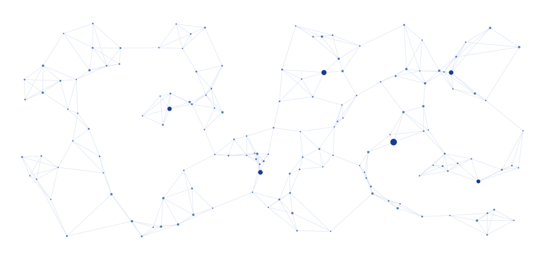

SOLIR MURI Kickoff Workshop
The SOLIR team will convene at Rutgers University for its inaugural kickoff workshop, bringing together the project's principal investigators and research team.
READ MORE →Information Theory Meets
Rule-Based Reasoning
SOLIR develops the mathematical foundations and algorithms for intelligent systems that learn, reason, and operate reliably in decentralized and uncertain environments.

LATEST NEWS
The SOLIR team will convene at Rutgers University for its inaugural kickoff workshop, bringing together the project's principal investigators and research team.
READ MORE →The SOLIR team met at Rutgers University for a full-day kickoff workshop with presentations from PIs and representatives of the U.S. Army.
READ MORE →Rutgers Research highlights SOLIR as one of the exciting new interdisciplinary initiatives advancing AI and science.
READ MORE →PARTICIPATING INSTITUTIONS


OUR RESEARCH THRUSTS
Developing fundamental measures and limits for representing, communicating, and learning structured knowledge.
LEARN MORE →Building probabilistic models that combine uncertainty, logical structure, and data-driven learning.
LEARN MORE →Designing scalable algorithms for learning and inference across networks without centralized coordination.
LEARN MORE →